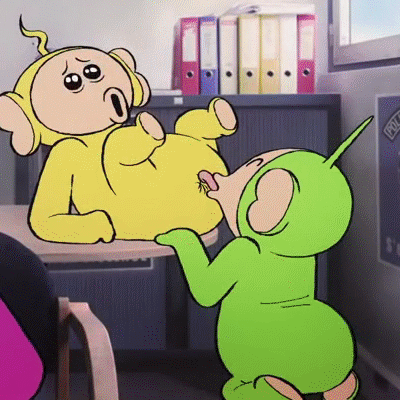
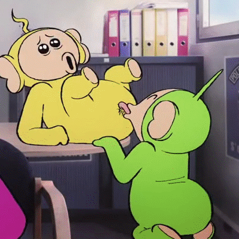

this is like 50,000 leagues under the sea but like, not really
first of all, don't call me Ȁ͇̫̬̹͙̺̻͔̠͕̣͓̽̎͊̈̄̂ͫ̋͑ͬ́ͥ̔͌̐́̚̕͠͞A̴͋ͫͨ͂̍́ͨ҉҉҉̞̝̘͍͇̩̗̬̘̟͙̥Åͩ̅ͪ̈́̈̎ͭ̒ͦͧ͌̚҉̴̨̼̰͈̯̜̬͇̦̳̤̣̟͟A̡̋̃̈́̽͠͏̻̜͎͖̝̞̖̯̬̯̳͕̠̫̟̺͔ͅA̵̦̤̰̦̺̻̺̤̩͈̟͕͉̠̦͕͕͌ͦ͗ͪ̑̾̓͆̋̓ͭ̂̀͑͊͆̈́͝ͅĄ͚̞̖͇̩̻̱̯̯̿̀̔ͤͤ͌̋ͮ̌̐ͯ͆͊͑͐ͭ͆̇̒̀͘A̵̴͕̩͓̻̖̘̭̣̟̘̥̠̯͐͆̅̃̒̒̒̑ͧ̈͑͑ͤ́̚͟͞A̧̧̯̼̖̥̘̝̲͌͑̏̄̐̊͑̐̆̂̅̓͂ͮ͋̚̕͞͞A͂̑̾̽̀ͩ͊͌̑̈́҉͖̱̰̘͓̱̝̬͉͢Ä̡̺̤̥̭̳̟̩̩̗̬́͗͊ͮ̎̓̈́ͪ̽ͥ̐ͧ͝A̷̷̩͕̘͈̜̝̘̮̗̣̦̹͈̭̜̯͓͙̓̆̄̓͂ͫ͌͆͆͆̀ͦ̚̕͜Ã̴̴̪̱͕͇̖̙͎̬͙̺͗̎̽́̈̊͒̽͊ͤ͂̉͆̄͘͝Ą̛̼̤̠͍̮̭̰̲̼̉̎̽̚A̷̶͎͙̣̫̣̦͖̫̣̭̤̻̠͇̳̤ͭͫ̃̀͐̚͢͡Aͪͤ̍͆͌͑̇͌͗̐͐ͣ̀͏̨͉̼͖̦͙͕͓̹͙͓͎͜͜ͅͅḀ̷̣̳̬̈́̍͋͗̾ͯͨ̏̍̽ͣ̀̚͢͞A̧ͮͪ̄̅ͯ̑͘͜҉͖͚͍̟͕̣͍̥̠̙͇̗A̧̛̲̰̳͓̭̞̗̥̟͈̼̫̭ͮ̑ͧ̉ͭ͗ͫ͛ͤ̌̈́̀͜Ą̛̝̬̝͈̼̮̻͖̥͍̫̪̓ͥ̋ͩͦ̅̿ͤ͘͡Ä̛̠̗̦̹̘͕̩̟͎̯̙̳̩͗̆́͑̽͐͛ͨ͊̽ͧͭͪ̔ͥ͂̌ͨ͟͜͞A̧̡͎͖̩͇̟̱̗̺͙̮̳̩̱̤͇̜ͣ̀̏̋̈́̆͆̊̽ͭͬ͛͌͋̌̎́͞Å̵̢̢͎̩͖͉̪̦̣ͭ̊ͮ́̚̕Ą̢̨̡̙̖͙̤̊͂̓̏̅͆̎̑ͩ̚͡A̢̹͓͍͎̱͎͈͇̩͎͉ͥͭ̒ͫͣ̕͞A̡͍̗̭̠͙͚̭̝̹̟̟̣͉̳̎ͦͧͩ̂ͫ͆͐ͭ͛̍ͯ͆̀̕͜Ḁ̡̧̹̼̮̜͎̪͍̺̟̯̦͓̟̯̹͚̉̓ͪͪ͛̓̐͊̈́̊̌̏ͤͦ͑ͧ̇̔̀ͅĄ̫͎̻̠̙̇ͪͥ̓͑̓͋͗͛ͫ͐̑̌̽͑̐̀ͨ͜͠͠Aͣͣ̾ͥ̊͋͊ͬ̈́̄͑̃ͫ͡͏̀͡͏̖̪̱̪̗͚̗͚͖͈̮̗̰̮ͅA̶̧̧̮͇͇̼͗͂͊ͪ̃̚͘͠Ǎ̵̵̛̫̼̺̬̬̙̥͎͛̓͊ͭ̋͛̏̂͑̐͐ͮͫ̅ͪ̈́́̚̕A̵̧̛̞͈̪̪͔͉̻͍̖̰ͥ͊ͧ͊̀̇ͮ̓̆͑͑̀ͭ͜͢A̢̛̜̲̺̮͔̙͔͆̍͛͋̀ͣ͐ͬ̅̿̃A̛̖̳̖̟̘͌̑ͥ̀̚̕Aͣ͆̈́́͐̏̊̿̍̀̚̚͡҉̶̶̴̟̳̠̮Å̩̻̮̹̜͍̂͑ͤͦ͗̀ͩ̈ͥ́͊̌͂ͫ́̀͝͡ͅÄ̴̸̵̡͕͓̹̫̙̬̟͉̥̭͖́̏ͬ̌̽ͩ͐̄ͩ̆̐ͯ̀̃̓͝A̵̧̖͖̖̭͚̒̾̈̍ͦ̀͡͡Â̢̡̖̺̟͓͙̲̤̘̺̖̜̏ͤ͋͘͡Â̶̶̡̢̹̠̯͚̈̌̿̆̒͌̒̊͗ͣ͆̈́̊̉ͯ̾̓̚Ā͖̙̯̗͕̙̞͍̗̯̝͓͕̼̭̱̫̺ͨ̅ͩ̈́͊̿́ͭ̚͘Ą͈̫̯̫͈̫̘̲̤̯̭͈͚̼̺̱̝̙̙ͤͨ̋̏̒͌͘̕A̸̡̛̻̱̙̖̘̯̮̣͓̍͌̔̈́̀A͎̟̪̻͚͆͋̏̑͒͂͐̐̓̄ͥ̑ͯ͋̓ͧ̀́A̡͇̭̣̗̘̯͉̞̻̮̒ͩ̒̉͐͐̋ͦ̒ͬ͗̐ͦ̈̿́ͅA̷̰̹̼̮̦̤͕̙ͯͤ́͗̆͑ͣA̞̣̰͇̹̯̝̫̦̿̂ͤ͐͐͐ͩ͂̊̍̓̅ͬ̈̎̋ͪ́͘A̵̡͛̓̈́ͩ̾҉̘̳̘̭͖͈̘̱̠̩̬͉̱͡A̷̧̖͓̪͔̟̳̼ͯ͗ͭͣ̇̊͡A͑̆̒ͨ͋ͥ̃͐̆͑͆̔҉̸̧̬̖̦̟̹͕̭̮̣̳͔̬̣ͅͅÅ̆͐͗͊̈́̿̍̍҉̴̼͓̹̻̙̬̪̤À͊ͫͫ̊̒ͧ̍ͮ̿̅͆̃͛̓̓̋̈́͏̩̻̠͇̫Ã̛̀ͤ̄͊̇̽̇̿̀̍̊̔ͯ̈́ͨͧ̂͢͠҉͙̦̩̝̱͙̺͈̹Ą̡̧̞̻̤̻̹̣͈͎̥̫̜̞͕͕ͯ̆ͣ̈́̀̑́ͬ̍͛ͩͮ̊ͬ͊͟A̸͂̓ͯ͋̍̃̆ͪ̃̽͂͏̰͓̥̣̞̰̗͙Ä̡̡̤̪͕̼̝͚̜̟͇̮͇͙́͂̐̈̒ͤ̆̈́̋ͦͬ͌̐̅͐ͮ͒͠Ã̛͔̪̬̬̹̭̣̘̺̄̈́̑ͬͪ̾ͦͦͮ̐̎̂͐̔ͮ̐ͨ͠͠A̢ͮͭ̀̀ͣ͟͟҉̪̜̙̺̦̜͉̗̬̹̹̭̜̬Ḁ̧̟͓̺̮̥͔̮͉̹̲̘̮͚ͭ͌̍͒̓̓̆ͤ̇̀̀Ȃ̹͚͎̠̦̼̮̗̞̬̦̫̖͍̙̝͈͖̮̉̔ͮͧ̾̀͘͠A͙̫̟͖̗̬̣̘̒̾͒ͮͫͧ̐ͯͩ͛ͩ͂ͯͨͭ͢͜A̷̛̞̯̣̩̻̯͈͔̱͍̜̘̲̹̗̺͋ͨͤ́͒̍̔̇̌ͮ̎̇̓̚̕͠A̦̯̙̺̬͉̜̠̗͙͙̻̼̫̠͎̣͈͂̂̿ͦͣ̈́͒̈́̒ͪ̉́͢A̢̛̪̜̘̘̳̫̭͕̘̬͔͚̔̀̍ͭ͂̾͆̚ͅAͩ́̉ͨ́ͨ̈̃͐͑̾̇͒ͫ̃̿͡͏̡҉̷̦̭͙͙͓̪̥̗͉̗̲̳̳͕A̵̛̞͕͕̤̥̘̖̮͇̘̻̲̺̝̪̩̼̬ͥ̀ͤ̚͝Ǎ̸̜̝̖͚̝̠̟̝́̾̃̍̍ͬ́ͦ̈͞Âͮ͐̆̃͏̭͈̬̹̹̠̻̝͙̱͎̦̬͕͍̝͢Ą̶̵̞͚̻͈̑͒͊͌̍̚͠Aͮ̾ͣ͐̓͑͜҉͎̭͇̣̱͖̰̝͓̰̬̜̝̳͍̠̟͎ͅÄ̡̬̝͙̜́͒̆ͮ̈̇͗̓͌̓̌̎͗Ȁ̸̸̴̶̹̠̜̘̞͈͎̟͔͉ͥ̊͛̈́̑͐ͨ̉̈́ͯͯ̎̈́Ã̛̼̠̹̥͖̭̺̦͍̜̫͍̙̻͚̓̿̏͘͡Ȃ̧͈̩͔̼̳͖͔̤͔̖̜ͤ̔̓̉̑̃̏͒̂̒ͣͨ̒̀A̶̡͍͍̤̩̰̜̙̣ͯ͋͐ͨ̋̓̃͛͗͗̒̽̎͞͝A̟̺̜͔̅ͨ͆͂͛͒ͨ͋̌͑͂̍̃͂̍ͨ̕͠͡ͅA̵̛̾ͯ̄̽̈̒ͣͥ͛̋̃ͤ̽ͬͬ̚҉̵̻̻͖͔͈̮̤̺͕̭̻͎̳̞̞̦̱A̮͓͚ͮͦ̏̍͗̅͌̏ͬ́ͤ͆ͨ̽̉ͮ́̀͘͢A̢͕̤͈̥̺̩͖̰̬̺̜̜̦ͣͥ̃͒ͮ͊ͭ̍ͦͩ͋̊́͛ͮ̍ͅAͨͥ̃ͪ̑̇ͩ̽̍̓͌ͦ̚̚҉͏̞̭̮͔̖͓̳̣̱͎̭̞̳͘͠A̢̨̞͎̱̺̬̫̳͙͍͕̗͛̏̒ͩĀ̎ͦͣ̅ͩ̾̊͏̱͍̱̣͖̥̯͎̟͉̣̦͓̗̯͜͟͝Ǎ̵̯̹͙̹̰̯͍̪̫̠̺̺̤̯̠͔͉ͬ̔̅̈́͊͛̚͡A̡̨̪̯̜̼̝̯̦̠̰͔̪͔ͨ͂͑ͯ̂ͮ̿̿̑̏ͨͮ̇̑̓̄ͅA̡͗̐ͣ̈ͤ̾̔ͯ͢͏̵̻̺͇͕̖̠̥͉̞̟̞͔͇̕Â̧̛̲̪̫͎̰̪̝̭͕͇̳̜̤̬ͮ̎̏ͬͥͬ͆̌̆̀Ą̴͖̫͕̪̤̘̪̭͉̦͔̫͑́̎ͩͮ̋͒ͦ̒ͤ̽̍ͪ̚͝A̢͇̬͎͚͛ͫ̀ͥ͊ͣͨͭ͂̐̆̈̊͘͟͜͠A̖̺̙̦̠͖͎͈̣̩̟͔̘̖̪̩̫̹̒̉͑̓̾ͮ̀ͩ͝A̷̴̻͖͔̥̻͉̤̱̜̖̰͓̓̒͗̅ͨ͌͗ͯ̅̔ͣ́͝͠A̐̔͌̈͆ͣ̄̔ͩ̓̂̄ͣ̀҉̧͓̪̣̠̣̼̰̤̪̺̘̗͈̞͚͟͡Ā̷̛̙̰͚̣̼͈̗͚͓̙̯͉̻̹̳̬̻̈́̀ͩ̀̑̇ͯͨ̋ͬ̑͟ͅÃ̷̢̛̩͙͚͇ͥ̍͊̆̈A̡̹͈͎͉̭̼͉̱̫̺̥̗̿̒̃̋͌͒ͣ͋̒ͥͦ̾͘͟À͗ͣ̒͌ͥ̐ͦ̉̒ͬ̀̈͏̘̝̞̯̟͎̝̖͝Ą͈̘̟͂̋ͩ͑̀̕͞A̐̒̅̈́̃̄̑̑ͣ̈́ͥ͑͆̋͏̵̛̕͏͙̝̤͈͔͖͕̙͙A̡̛̭̣̗͚̙̻̜͉̳͚͙̥͇̲̤ͩ̄ͥͪ͆̂͐͗̈͌͋͛͗̓́́̚͠A̵̵ͭͫͯͫ̚҉̱͎͎̲̭͚̱A̵̴̧͉̟͔̳̜̰̖̼̟̙͔͙͚̯̳͆͑ͫ̒̈́͂ͥ̐ͨͬ̐͐́͒ͨ̃͒ͅͅẠ̲̜̳͇͔̊͐͆͑ͬͦ͌͗̈̑ͬ̾͗̑͗͜͡Ą̸̛̳͉̯̣̻̺̫̟̲̺̟̣̰̈́̊̃̒̇̈́͗̌̀ͧ͑̂A̢̤̦̟̲̫̬̦̭̘ͫ͆̍̓ͤͫ̏͛̐̌̉́́̔͂͋́͘͜Ã̎͆̊ͮ͒͗ͫ̾͋̋̽͡͏̧̪͖̦͉̹̦̯̮̭͔̱̩̦̥̟͟ͅͅA̸͍̠̬̟̙͔̙̦̘̥͚̤̣͍ͫ͋ͪͬͬ͐͟͢ͅA̪̺̝̜̤̤̘̪͍̤̭͇͓̹͈ͦ̋̒̒̑̽͜͡͝ͅA̎̓̋̆̽̓͐̔͌҉̵̛͎͖͉̪̭̬͍͟A̶̖̞̠͍̲͈̯̤͉̥̣ͭ̂̇̽͡͝Ą̷̭͔̱̜͔̤͙̜̮̠̳͎̹̖̫̜͙̬̍̀̈̓̊̈́̆̐̓̃͒̀̆͂̆ͤ̑̒̓́ͅA̸̡͙̦̰̬̫̗͎͆̽̑͆̃͋̈ͣͥ̊̋́͞ͅA̷̬̼̹̼̮̣̺͚̘̺͎̩̮̼̙͈̹̺̾ͩ̓̑̍̄̔̈͆́ͨ́̐ͪ͒̔̀͜Ḁ̸̲͍̙̫͙̥͕̳̦͕̱̹ͤͥ̎̈́ͤͫ͛̆̊ͯ̍͐̐͒̔̏̕A̸̯̟͇͇̠̭͖̪̘̯̼̦͍̞̰̥̪͎̩ͯͪ̑͒͂̀̂̽ͭ̔̂ͫ̊̍͘͠Āͫ͌ͣͮ̇̆́҉̤̖̹̼̠̠̻͉̯͚̟̮̤͖͍̺͢͞͝A͍͕͓͉̝͇͎ͤ͋͛ͯ̈́͗́̚̕͟͟A̰̣̩͇̙͈̙̣̩ͫ̉̔ͩ̏͗̋̋͐͐ͯ̇̍́̕͡A̷̯̤̲͇̦̥̳̜͙̼̲͙̻̺ͪͫͯͦ͂͊́͠ͅĄ̜̪̠̥̯͖̫̥̗͕͉̹̰̝̝̣͑ͣ̓̐̔͐͆̒ͥ̌ͯ͐̈́̐ͫ̅ͫͭͨ̀́͘A̵̲̗̦̲̮̜̗̱̻̝̮ͯ̾̎̈͛͊͢͞ͅḀ̵̴̻̬̣̗̼̫͔͈̲̒̆͐ͣͦ͛͐͛̋̈͛͊͊͗̒ͣ̋͜͢ͅĄ̋̊̏ͧ͝͏͈̞͙͚͎̙͚͓̜͖Ä̛̟̪̬̯̳͖͍̜͚̭̳̬̝̜͛̐͋́A̷͊ͤ̅ͣ̅̈́̔̃̈͌̔̒́̃ͥ͠͞͏̗̖̬̱̠͖̙̲A̶̛͚̘̪͕̱͙̪̱͙̘̟̗̜͈͗́̉͆̓͗̓̽̍̽̋̌̆ͪͪ̿̑̊̚͠ͅĀ̬̬̝͈̪̝̬̫̏̇̄̍͒ͬ̂͗͜͝͠A̡̞̖̭̳̺̜͙̬͖̻͎̘̤̟̓̎ͥ̂ͦ̿̒͆̄̓ͬ͢Ả̞̗̖̝̭͔͎̘̮͙̬ͯͣ͌͆̒ͣ͂ͪͬͩͭ͗͒͟͡Ą̶̛̫͍̩̼͔̗̮̺̰̗̩̦͎̟̭͙ͣ̾̅ͦ̄̍͐̆͐̒̈́̓̏͆͠A̡͐̑̌ͧ̓ͥ̐ͬ͊ͤ҉̸̶҉̣̮̩͎̯̺̮ͅA̸͒ͪ̌ͬ͐͐҉̴͏̡̲̱̺̰̫͎͔̝̣̞̱̖͔Ą̦̭̩̯͆͂͒̆̍͆͒̈́͒ͣ̓͂͋̄͒͂͂̑̋̀A̵̸̻̭̤̱̱̮͕͎̺͔̜̭̯̳ͯ̓ͤͤͪ̑̏̃͑̓̎̿͌͊͢ͅA̧̢̻̭͙̘̻̣̖̞̹̣͔̞̬̣͍̹͗̃̂̐ͦ̓͌̐̆ͩ̒͡͠͠Ą̵̣͔̗͓͉̯͙̖͍͎̦̩̻̖͉̗̈́ͮ̔ͨ͒͌͆ͬ̃̏́̊̐̓̎̀̚̚ͅA̴̧̮̟̞͉̻̠̻͇̭̓̑ͮ̑̓́ͬ̃̔͑ͤ̚͢A͈͖̯͇͍͍͎ͩͤ̅̇́ͤͮͧͧ͑͒̇̉͆̎ͪ̀͢ͅͅA̵̡̦͖̻͌̃ͤ̅̽̎ͮ̂̅̅͠Ăͣ̇ͨ̽̽̓̾̈́҉̱̤̺̦̘̩͈̬̰͚̲̫̟̼̹͓̰̩͘̕ͅAͦ̂͊̋͌͑͐ͧ̈́̋̐̆ͭ͊͂ͦ́҉̺̮̥̪̲̞͉̪̻̲͘A̷̱̥̼̟͗ͨ͒ͩͪ̓̉ͧ̐͑ͣ̑̒͛̆̚̚͡Ą̸̴̝͇̠̳͇̟ͪͩͬ͆̀͑̾̍͛̈͑̊́ͅA̧̛͋ͨ͌ͣͯ̀ͮ̋̒ͮ͡҉͕̝̥̲̞Å̫̪̲̳̠͓̻͍̱͚̫̳ͦ̐͑̾̉ͫ̀ͫ̀̚̚͞ͅĄ̵͔̭͔̦͓̟̞̼͎͙̟͍̟̦̗͖͊̃ͬ̅ͪͦ̑ͦͧ̇ͨ͒͋̾̕͢ͅAͥͮ̑ͤͥ͊̒ͭ͊͛̎̑̃͏̶͈̗̠͎̲͘͘͠A̷̸̛̬̘̭͓̺͓̯͖̰̰͚̣̤̺͗̂̆͂ͣͧ̒ͥ͒A̴͛̍̑ͫ͆̆͊ͭ̊̕͜͟҉̥̰̪̬̫̱͓̣̪̯͈͉͖͎̮ͅͅA̶̺͎̥̰̞̥͈̟̲͙ͭͦ͌̆̿͛̏ͮ̕͜͟ͅẠ͇͎̮̣̺̥̣̖̝̻̥̪̥͍͉ͩ̒̆͗̅̓̉͡͠ͅA̢̝̫͖̮̘̖͕̣̙̺͆̑͌ͨͯͅͅA̡̗̰̭̻̬̯̙̭͉̝̖̝ͯ̄ͯ̃ͯ̋̎̈́̈́ͪͨ͗̋͌͐̽̓́̀̚͟͝͝A̶͈̪̙͙̱̯̗͙̣̭̖͕͙͈̓ͪͨ̏̏͊ͨ̀͑̈̊̕A̛̲̻̱͉̠̹͛ͭͤ͊ͤͬͥ̍̌̍ͯ͐̿̌̿͑̾̚͢͡͠A̛̰̝̘̣̱̩̹͎͉͚̼͚̲ͦ̄̄̄̌̿͆͒ͥ͟A̶̢͗̀ͥͩ̋҉̵̧̮̭͔̯̜A̴̫̩̗̭̜̮̼ͨ͊̿ͮ̈ͪ͒ͥ̓͊̄̾̍͜͝ͅA̵̢͎̠͚̲̠̖̳͍̅̌ͣ̌̌͗ͣ̈́̓͊͗̓̆͑̃́͝͝ͅĄ̭̼̺̗̮̯͈͈̤̓͗ͣ͗ͭ̈́̅͗͒̋̏̓ͤ͟͞ͅÅͦͫ̐ͣ̐̒ͮ̓͏̴̣̘͇̹͉̝̪̩̼̥͍̣̥͕̕A̸̛͉̰̭͓͖̽̔̓ͪͯ̔̔ͩ̒͝A̛͒͋̓̂ͨ̈́ͭ̚͏̼̜͇̻̰̣̰͈͚̣͎̪̦̖͍͉͕͙̥Ą̷̸͎͚͖̰͚̯͇̫͚̝̠̦̣̝̙ͮ͆ͩ̂ͯ̿͑ͨ̄ͥͧ̉ͭͅA̢̍͒ͤ͌ͤ̚͏̛̹̳̲̱̲̟̻̪̖̪̲̖͕̺̱̀͡ͅAͮ͋̒ͬ̒ͧ̽́͂ͩ͛ͬͨ҉̸̧̠̗̱̲͙̻̗̠̖̬̼̭͇̦̱͙̼͔̭͟A̵̱̲͉͕̪̘͊̏͂̓̉̊͆́̄̃̊ͦ̀͞Ȧͥͧͩ̏ͩͪ̒̋̒͋͂̍͊̊҉͠͡҉̝̫̺̜͇̲̦͡A͂ͦ͌ͮ̊ͧ͊̓ͪ̋́̽̈́ͥͦ̇͑͏̴̪̮̣̟̘͚̝͙̝A̴̸̵͈̜̩̫͇̟̣̤̦ͣ̅ͫ͊͋ͤ̈́̓̓͌̐͌͒͋͊̋̓Ȃ̴̵̬̞͉͖͓͔̰̹͚͚̦͍͇͙͊ͮ̈͐ͫ̒̉ͪ͌͘͠A̢̳̻̬̤͕̟͙̺̗̹̲̳͉̯͍͇̖̅̐̉͒ͫ̋͗̐̍̓͋̀͒̓̓̾́́ͅͅA̶̸̧͍̲̤͉̪̲̺͎̜͙̝ͬ̎̈́͐ͩ́̃̓ͬ̚̕Ã̻̹̮̪͍̱̱̊̓͛ͭͧͥ̉͐̐̅ͥ̌͌̚͘͝Â̶̷̪̟̝͚̠͎̫͓̟̥͎̯̳̰͉̥͒̿́̎̅̾ͤ͞A͉̗̼̤̙͚̱̲̦̠̲̖̼̣̗̟ͧ̋̀ͦ̓̌ͬ̇́ͩ̈́̇̑͟͝͞ͅA̵̔̏̇͐ͣͫͩ̐̈͜͏̢̙̩͉̹͎̦̦̺̀Å̡̞̟̖̯̿ͣͧ̕͞͝Aͥͨ͆ͥͯ̔ͮ̈́̏̀͛̄̾̀͡͏̘̟͇͙̼̣͖̼͙͖͜Ą̶̡̫̹̪̰̭͚̹̹̻ͦ͒͂ͭ̍͌̀̆̓̿̀ͭͧ̊ͪ̄̒̽̚͢͡A͊ͮ̐̓̍̾̉̏̔̿͆͟͏̡̤̗̱̯̟̗̞̦̥̙̻̬̯̀Ȁ̶̧̺̘̳̯̰̯͙̪̗̞̎ͩͤ͘͜ͅẢ̷̝̪̳̺̘͕̬͙͉̲̏̔͛̀ͥ̊͌ͭ͛̓̈́̅̆̆A̧̨̛̛̼̼̖̳̦͈̬̟̭̹͎̮͚̙̘̬̣̮ͤ͛ͧ̎ͨ͂̓͡A̶̠̙͖̦ͫ͐̋͒̈́̋̄ͯ͒̎ͫͣ́͝A̋͒̽͌̆̋ͦ͂̄̂̓̾ͭͮͫ̏̇ͣ͜͏̦͓̼̥͕̟̞̤͎̻̲̹͔̳̀Ą̴̨̲̪͓̙͓̣̮̪͔̹̫̻͓̜ͪ͐ͦ̅ͥ̊̀ͨͤ́ͧͮ̇̋̅͋͐ͭͭ̀͡ͅA̸̷͖̺̳͈̗̼̜̓̏̑̌̈́̓ͦͤͯ̐͆̋̀̚Ả̢̩̬̜͓̲̩̳͇̟͖͕̃ͬ͆̊̇͞͝Ā̸̧̢͖̞̲̝̥̹̞ͫ̔͋̓̀͑ͫ̆ͮ̑̚̚͟͝Ą͛̌͌ͧ̿̅̋̄̿ͩ̕͏̨̮̜̱̣̩͎̪̠̦͖̬͇͔̭̀ͅA͛ͧ̐ͣ̀ͩͥ͆ͬ͂͂ͯ̀̚͘͟҉̡͖͖̯̱̜̻A̻͚͉̝̩̙̬͓̙̻ͯ̿̃̑̋̉̑̋́ͮ͛̊ͪ͜͠ͅA͂ͨ̑ͤ̑̈ͪ̑̉͊̌ͭ̌͐̃ͫ̄̈͝͏̢̰̰̜̪̟͓͘A̷̛̫͕̪̲̺̥͔̯̰̯͉̟̹̪͑̓̔̉̚͞Aͪ͊̀̅͛̓̅҉҉̪̻̤̤̻̮̖̞̜͍̝̪̭́Ȃ̲͕̰͖̣̬̝̫̳̱̦͕͉ͪ̊ͬͭ͗̆ͪͤ̕̕A̵̙̪̣̤̩̞̬͎̘̭̘̖̦͍̱͍̖̲͒̓ͫ͋ͦ͒̾ͮ̇̓̒̈́̾̽̐̚͠Aͯ̓̃͗͛̍ͤ̉͂͑̏͑̓̂̒̍̇͏͍͙͇̥͖͓̮͞A̶̮̼̦̞̝̥̭͇̝̻̳̦̻̝̱̤ͣ̎̈́̀̂͠ͅͅA̷̧͕͍͉̹̲̮̜̦̞̮̺̮̗̟ͬ̌͌͂ͪ͐́A̧̺̻̼͉̦͇̖͉͈̲̖ͭͤ̒͐͌̄̒̍͂̎̽̋ͨ͗̌͜A̷̷̷͕̖͔̙͔̠͔̜̱̞̞̗̗̺̫͓̣͙ͨ̓ͭͦ͆͛ͦ͌ͤ̽ͬ̐̔͂͘͝A̷̙͓̱̝͙̞͕̲͈͚͓̓̀ͨͭ̾̾͌̾̔̌̒̍̌̌ͭ̂́͢͞͡A̷ͥ́̃͒́ͬ̃͛̒ͣ̈́ͤ̂̐̚̕͏̪̮͙Ḁ̡̥̲̜̤̙̖͔̗̫̠͔͈̇ͧͯ̐̏ͯ͗͆ͅA̶̷̧͉̣̻̪̼͉̞̪̰͓̝͈̰̥̯̳̤̎̽̊̃ͫ̿̏̅̂ͥͯ͝A̛̿̀ͧͦ̐͗̾̿ͨ͢͏̳̫͉͈̯̯̻͍́A̵̠̼͍̣̣͔͖̝̻̒͂̾͂̒͒ͣ̾ͪ̈́ͩ̌͛ͅǍ̴̸̬̼̼̭̭̖̹͂͋̋͒̐͛ͤ́A̢ͯͣ̃̆ͯ̿̋ͣ́̚҉̭̰̞̖̟̺̹ͅͅͅA̪̹̠̝͓̣̱͍̼̻̫̘͚̥̬̓͗ͩͪ̎ͧ͋̓̅ͥ̈̿̅͛͐ͨ̍̃͟͜Ą̨̟͇̜͍̹̭͙̮͕͈͖͎̭̺̗̪ͫ̒̇̀͛ͣ́̇̃̚͠ͅA͑̍̌̑ͪ͑ͩ̆̀̐̒̊̾̇̚͏̲̞̹͔̬̜̖͠ͅA̛̝̳̙̻͉͎̤̝̲̩̰͕̰̤̦͑͆̐̓͌̍͂ͫ̓ͥͧ̇̑ͫ̑ͭ̾̓͡͞A̛͕̟̘̩̝̝͙̳̱̭̲͕͚̫̤ͣ̆̌̅̈́͂̾̈̊ͤ͒̐ͧ̀À̴̧̝̺̻̪̲̗̙ͯͥ̏̅͂̃̂̇̊̊ͪ͗ͣ͒͗̑ͦ̕͞ͅÅ̡̢̤̯̝̯̟͚̜̪̣̞͈̠͍̥̪̃̏̈́͊̉̈̆̎̀͜͝ͅͅĀ̟̳̗̖̹̪͇̩̪̏͛͐ͮͬ̓̆̀͛̃͛̎͟͝Ą̡̪̟̰̰͕̱͔̦̂̄̀̍̿̇ͤ͊̃̚͘͝ͅͅA̸̜͉̹̗̣͖̣̜͉̙̖͇̼̦̬̞̳̭ͦͥ̓ͯ̐͠͝ͅẠ̛͕̤̫ͫ̃̔̓̎̒̌̄̃̌̏̾̇ͪ̎͟ͅǍ̢ͨ̈̌ͯ̏̇̿ͨͤͭͦ͗̉ͫ̋͡҉̨̨̫͔̲͉͖̫̩͖̱A̶̷̩͖͕̥͚̳̪̲̹ͧ̆̀̎̾ͩͭ̈ͬ̀͝A̷̰͓͍̤̼͖̦̗̹̣̤̙̿̓ͦ̂̓̈̑ͮͫ̍͟͜͢ͅA̷̝̹̫̜̹̞̩̯̾̾̍̓͆͘͞͠͝ͅĄ͍̖̳͙͈͇̠̘̬̜̜͖͈͚̘̰̘͈̟͐ͨ͐̓̑͂̐̀ͨ̍̒̄͑̂̽͂̓̑͢Ą̺̥̤̰̟͇͎ͫ̌̋ͮͫͭ̋ͨ̔̓̾̃̓ͦ̋̚͝Ã̴̢̡͍̹̱̘͕̝̭͉̩̘̟́̆̌ͤ͗ͥ́̅̆̑̿ͭ̔̉̑͒̀͜ͅͅA̸̡̛̼͚͈̱̣̬̘͎͙͚̥̣̙̜̭̙͉͗̒ͭ̆̓ͩ̉ͬͪ͠͝Ã̑̀ͦ͆ͭͩ̎͛̇ͧͮ͏̭̪̩̩̙̕Aͬͩ̊͏͙͓͔̼̬͓̠̱̼̟́͝Aͨ̎ͦͫ͐ͩ͗ͤ̔ͪ͂ͣͧ̎͢҉̳̘̮͕̼̖̦̘̪̝͇͎͕̥̫͟͞Ȃ͌͗͛̇̃̅͌̎͌͏̸͔̱͎̩̜̤͓̫͙̲͇͜A̷̶̢̛̗͓͔̬͚̰͙̥̹̪̻͚͓͈͔̋̉͂̾̆̒̉ͪͫ̅̿̍͂͒ͤ͘A͙̥͔͓͍̬̘͉̹̳̜̯͙͓̬̞̖ͫ̓ͫ̂̊̇͑͊̔̏̄̋͂ͥ̿͐̀́͘͞Ą̵̵̘͇̞̼͓̻͈͚͐́̀ͮͧ͠À̷͓̜̞̰̜͈̰̣̩͚̮̮̳͙͈̟̺̻͚̓̀͒͒̿̄ͫ̽ͪ͌̊̓̔̈́̍͠A͑̓̂͊ͫͤͯ̎̽̈̾̚͏̶͍͉͈̺̗̳̦̹̼́A̧̧ͫ͊̈́ͧͪͧ҉̷̛̲̙͇Aͫͦ̎̄̿̀̊͐̔͏̯͚̱͇A̵̹̟͚̳̪̦͔͔̬̞̠̠̱̘͈͎̗͙ͦ͒ͨ̂̇͞A̛̟̰͕͍̫̠̻̯̱̪̞͕͇̺͇͐͑ͦ̂͊̄̍͌̑̾̒̌͠ͅĄ̛̔͛̀̑ͩ͒̿̇́̈́̾͐̎ͩ͏̨̱͎͇̪̮̥̟͙̯͈̯͞A̵̷̞͎̩̙͇͍̙̦̼̬͚͔̐̆̓̃ͩ̏͂ͯ̈́̓ͅA͆͂̐̐̽͏̸̫͓͖̯̻̹͓̪͚̗͍̠̭̹͖́̕Aͦ̃̍ͤ͏̛̰͓̞̳̗̀͠A̷̴͓̝̜͕̞̯̞͙̳̠͉̝ͤ̓̔̈́A͗̅ͨ̏͜҉̠̥̼̳̣̤͔̻̳̕A̡̛ͩ̎ͪ̏̋̆̔̏́̒ͦ̀̿̓ͮͫ̀҉̗̣̞͕͇͚̖̜̲̭̘̰̯̻̖ͅͅA͌̿̊͒̍̾ͫ̆ͪͯ̾ͪ̒͛͏̷̶̝̞̟͕̣̱͓͎̠͚̝͇̬̠̲̭̳̠́ͅA̡̢̹̘͙͔͗͋ͬ͊͋̒̆̀ͤ͑ͬ͋̽A̸ͧ̈̿ͪ̓́̔́͏̤͈͖̰̜̺̻̺̲Ȁ̸̙̤͈̭̲̖̠͖ͮ͒̇̂͊̊̒̿̔̕͟A̧̢̘̰̪̯̩̥̹̅̓ͧ͛ͩ̈́̎ͧ͡͝ͅÀ̀̉ͥͮ̿̋ͥͦ̑̆̓̓ͮ̎͋̀̚҉͔̬̭̻̱̻̳̱̙͇̻̫̼̥̲͔̱͔A̵̲̩̟͔̰̼͇͓͗̎̒̑ͤ̀́A̷̅ͩ̽ͥ͋̒̈́ͯ͊̉ͤ͘҉̨͙̮̪̠A̶̜̥̦̹̞̺̙̤͎̘̥̹͈̺̖̗̞͌̃ͥͮͣ͞ͅĄ̷̱̺̣̮͈̼̫̬̙̣͔̂̅ͩ̀̈́̾̑͘ͅA̖̮̩̜̬̫͍͈̝͛̓̃̍̏͆̌̿̈͒̂́̇̑͋͑̂̿͝͞Ą̢̲̱̘͍̻̯̜͎͙̬̤̖̥͚͓̠̻͈͐ͮ̿ͬ͗́͜͠ͅĄ͈͉͓̦̩͇̞͉̞̟̗̥̬̲͊̿́ͩ̽̎̓ͬ̈́ͥ͌͊ͦ̊̀͜Aͨͨ͗̌̓ͮ̐͜͜҉͉͙͖͎͜ͅAͯͥ͛̆́̂̒̿ͮ̅͌̽ͫ͐͝͏͉̘͙̖̙̝̜̙̦͖̠̤̜̼̜̺̘͍A̷̔͗̓ͪ̑͐̑̅̂͐͘҉̢̘̱̲̝̠͇͎̮͙̣̣̙̘̳̹͙̳̗Ā̵̛̲͎̯̞̼̦̱̠̯͈̦͒̀̏̍̽̾̇̃ͭͭ̓́̚͜͝A͕̥̳̠̙̭̬̪̦͍ͫ̌̽͐̇ͣ͂͛̑͊̈́̌́̐͋ͤͧ̊̚͘͠͞͡A̐̅ͣ͆̔̓ͭ̽ͮ̎ͬ̎̋ͥͤ͜͏̴̮̘͖̥͞͞Ã̸̧̮̟̪̯̟̬̫̯̪͓̯̱̪͊ͫ͛̒̄ͥ̌͊̎̄̅̓́͝A̷̴̢͖̻̘͙͗̋̐ͤ̐͗̂̊̓͗ͥ̉̚͡A̾̈́ͦͮ̋̽̈́ͩͣ̍ͣ̆͋͊ͨ͂͡҉̲̹͇͎̝͈̣̯̮̙̦̲͚̮̥̗͢Ă̢̜̙̗̝̞̮̭̻̣̼̬̱͕̰ͬ͆ͧ̋͊ͯ̐ͩ́̂ͭ̃ͮ͂̽͘͝͠ͅÄ̴̵͍͔͈̝̰̳̬̰̈ͥ̏̔̈̈́̎̌͆ͭ͛A̾̊ͤ͊ͧ̅̐́ͨ͂̾͑͘͟͠͏̟̭̦͇̙̥͙͝A̢̟͓̦̜͍̭͙̝̰̬̘͓͍̜̾̉͑̃͐ͧͮͤ̈́͂̊͌̌͋ͯ̆̌͘̕͠ͅȂ͔̣͖̠̪̼̙̝̤̞͕͔͎̥͎͙̼͈̐ͭ̍̎ͬ̑͗̎̅͘͘͝ͅĄ̸̜̻̞͕͉͎͈̰͎͕̭̘͔̖͖͎̅ͧ̾̍̇ͩ̋̍ͯ͘Ą̵̮͔̫͓̟̥̭̪̺̘͋ͪ͌̈ͯ͒̓ͮͪͦ͌ͣ̏͛̽͆ͩ̍͟͜Ả̶̛̃̔̑̉̋ͣ҉̸̩͙̼͕̞̖̖̘̜̜̟͓̻͍̖̣͚̳ͅA̹̗̩̘̳͉͔͖̯̗̣͎̝͛͒͋ͧͧͪ͗̉ͩ̏̉ͥ̾͢͝ͅA̽ͦ̒̈́̽̓ͧ̿͊ͥ͆͗͒̋͊ͮ͏̠̥͔̞̯̹̲̠̦̻͘͢͢A̡ͨ͊̆ͬͨͩ̓ͥ͛̆̍̾͊̔́҉͍̦͕̬͙̼̻̰̺̤͡A̮̙͎͚̗̦̦͙̖̮̘̟̭̪͓͛͆̍̀̒̑͒̇͒ͦ̒̃ͬ̌͌͢͡ͅĄ̶ͯ̔͒ͤ͐̊ͥ́͟҉͓̱͔͎͍͔̮͇̩̣̹̠̫̮̤̣Ã̸̺̺̙͉̗͕͔̻̜̠̖͔͙̮̺̑ͥ͗͐̑̅̉ͩͤ̊̍͛̔͌̆̀̎̚͞Ả̯͚̝̇̓ͭ̌ͦ͆͐ͦ̌ͣ̽̄̓̀͋̐̔̈́́̕͜͝A̛ͩ̏ͦ̈̈́̄̋̿ͭ̐ͧͤ̒͗ͣ̆̐͋̽͏̴͉̙̜̦̺̰̬́̕A̲͔̪̫̫̬͈̱͙͛ͬ̏̇͌̅̍ͮ̌̋̽͐̔ͦ̈́̈̎̐́͡A̶̡̢͓̲̜͓͈̬ͤ̌̎͊̐ͮ̉͒̀́̌͊ͣ̊͒A̵̪̠̘̟̠̐͋ͥ̀̽͗̈͆ͫͩ̂́̉̋ͫ͆͛͋̚͘͡͞Â̵̶̢̛͇̲͙̳̦̝̰̬̹̞͇̦̄ͣ͛ͤ͟A̸̦̳̦͓͙͇͈̤̒̂̀͛̕ͅÄ̢̦̹̖̱̬̩̬̠̮͖̥͈̦͍ͪ̐ͥ̆ͮͨ̓̒ͣͥ͞Ą̵̷̹͕͖̲̟̝̦̦̟̤̝͔̗̯̜̳̜͔͗͐͌ͤͫ̄ͦͮͮ̇ͮ̚͢͠Ȃ̵̧̦̯̫̤̭̥̤̳͗̽̈́̎̐͑̉̀̔͊A̭͚̟̥͔̰̩͒̈̽̅͐̐ͨͮ̽̑̂͋ͧͭ̋ͥ̈͒͟A̛̛̖̠̬̤̼͓̘͈̦̯̯̬͈̮͖̗̤̟ͧ͆̍̍̎͂̓̎Å̴̶̟̜̲̖̣͚͖̳̼̣͙̦͔͌̽́͋̈́͂͛ͫ̓ͤ́͢͝Á̸̵̛̰̱̤̫̹̣̬͈̩͙̠̜̼͉̣̀͊͒̏̊͂ͬͭ̿ͣ̔̑̃ͣ͟͞A̛̿ͨ̽͛̽ͦ̉̄̒̆͏͍̖̪̲͎̩̤͇͕̲̭̤Å̵̵̧̪̩͍̯̦̞̪̳̦̜̫̥͇̋̔ͤ̐̂͋̕A̛̲̼̩̪̜̼̤͈̘͙ͫ̅͆ͣͥ͛̈͑ͧ̀A̶̡ͪ͛ͩ́́҉͈̻͔̠̩̦̰̥̲͠Ǎ̵̡̠̞̝̯̘̘͙̦̟̘͋̆̓̐͆̾ͣͥͮͨ͌̚̚͜Ą̨̨͖̩̗̠͙̝̰̄͌ͨ̿͐̅Ä̸̵̷̳̫̠̟̭̼̗̬́͛͑̅͂̍̇͂̂͋̅̓̍͂͜ͅȀ̴̵͍̬͇̠̬͙̬͋̈́͋͗̽͟͠A̦͚̗̖ͦ̉͗̌ͨ͐͂͝͡A̴̢͖̘̞̙̥ͣ͒̃͗͢Ả̢͙̞̲͙̣̬̤͔̟̻̩̍̆̇͊̐̐͟ͅÄ̡͋̓ͦͧ̔ͮͭͮ͢҉̧̱̺̝͉͕̹͔Ą̴̔̏ͦ̿̊͒ͮͫ͞͏͇̮̞̗̝͎̮A̷̖̜̬̮̍͋̾͂͌̃͡͞Ã̊̅̅̊̏̂͌ͦ̇ͥ̉̚͏̧͖̦̭̲̘̜̳̙̙͚͓A̧̧̞͖̪̘̠̱ͪ̇ͮ̅ͮA̢̲̦͙͔͓̳̳̦̰̮͛͗̄̄ͧͥͥ̋͒̋ͤAͮ̊ͧͧͤͤͦ҉̸̧̛̳͙̮̜̺̭̭͎́Ã͐ͯ̌̈͟͢͏̗̟̲̘̖̥̪͈̻̬͈͎A̴̴̛̖̬̯͚̬̺̖̗̮̪̳̝͛͑͐͋̓͞Ą̴͎͉̟̃̎͊̈̈̍̄ͮͫ̉ͥ̄ͫ̚͡͞Ą̷̛͔̯̜̬̪̦̖̫͚̺̼̭̖̪̗̘̲͗ͤ̾̒ͫ͘A͒̈ͨ͐͐ͭ͒ͦͪ̍̓͂ͥ̿͛̇҉̷̺̳̱̭̩̝̪̯̪͞ͅA̸̢̱̮͇̠̥̤̠̫̜̺̙͇̺͇̳̒̃̾̈́̐̊̈̃̀͠ͅͅĂ͗̏̅̔ͭ̎̾͑̚͏̨͏҉̼̼̭̥́Ā̷̸̖̠̬͔͙̪̜̲̙ͭ̍ͤ̆ͭ͜͜A̡̒̃̓̃̓̏͗͛̕͏̲̳̲̠͔̣̫̭̟͇̣A̶̴̝͕̳͊̉ͥͨ͆̾ͭ̑ͨ̑ͭͧ̆̿ͪ́͘͜ͅA̷̬͙̙̻̟̲̞̬̘̬̭̱̬̗͚̞ͬ̎ͯ́̽̋̋ͬ̆ͬͮͦ̈͂ͤ̓ͣ͗͢͡ͅͅͅA̙̰͙̺͈̰̯̭̖̖̬̣̭͚ͭ̂͋͆̾ͣ͑ͮͣͦ͘͟Ḁ̸̥͚̟͈͔̮̯̲̝͖̠̥ͫ̈ͨͪͥ̉̎͋̈͞Aͯ̒ͥ̇́̇̒̾̅̿̓ͪͭ͗͊̐ͨ͛̑҉̵̱͕̗̫͚͖̺̰̜̣̣̲͕̠̥́͝Á̧̗̲͉̩͐ͬ̔ͭͤͩ̓̓̌͗̈ͪ͐ͮ͛͗͛̚͘A̢̡̨͕̰͉̭̜̼̬͚͇̻̻̲͂̄̒ͮÃ̡̧̛̟̭̤̟̗̜̠̖͈̖̪̪̓ͩͣ̑̀ͫ̒ͦ̄ͬͥ͠͡A̵̡̢̛͕͖̯̣̠͇̯̲̠̲̦̗̼̺̖͇̫͖̺͑ͥ̐ͩͨ͋ͤͥ̂̍̂̃͛̎̅͝A͐̔̒̿̏̂̇̈́̊ͪͭ̅̓҉̙͉̩͔̠̝̗̝̯̦̪̗͘A̶̶̶̩͚̱̯͉̖͇̹͇̱̗̙̻͇̬̳ͤ̾ͣ̾́̐͜ͅÄ̴̢͙̖̫̟̠̞̱̙͓̙̮́̂̐ͬ͒ͧ̾͑͆̕͜Ą̛̹͚̝̣̳̲̩͙̇̾͛̒̃̅ͯ̔͆ͯͬ͟A̷ͬͣͪ̊̓́ͦͭͦ̌̽ͮ͝͏͚̹̫͓̝̺͔̬̲̼̦̱̹̠̬̼͎̘̕̕Ã͖͖̯͇̺͉͚̖̰̱͚͑ͭͥͭ̾̀ͥͦ͜͜͡Ä̸̱̘̞͖͎̱̗̼̥̹̥̖̣̮̤̱̘̜́ͯ̎̒̓̓̒͌ͩ͗̆ͯ͛̂ͣ̓͞A̿ͧ̏ͥͭ̋͂͐͑ͫ̽ͣ҉̛̣̰̝̜̤A̸̷̸̺̥̯͈͛̐̓̋̐͒͑̽̏̆͐̑ͨ͋͒͋͝A̷̷̸̻̰̲̫̙͔͈̦̒ͥ̆͗̀ͅA̢͓͖͍̩͔̳͚̲̯̖̘̯͕͓̦͇ͥ̔ͮ̈́ͤ̓̓̒ͮ͟͢A̷̯͓̮̮̖̹̻̣̠̬̙̱̻͍̭͛̓͊́͆͜͡Ā̤̼͇̘̗̝̳͓͚͙̔̌̍ͥ͌̃̀A̎̐̊̓̀̽͗̉̇͜҉҉͚̝͉̲̻̗̗͔̤̳̟͇ͅͅͅA̢̧̱͖͖̬̹̬̱̪̮̤̬͍̺̖̅̑͌ͫͬ͌ͦ͒͒̊ͣ͒̑͘̕͠Ä̧̛̪̫͓͕͔̤̩͎̙̠̟́̅̒ͭ͊̒́͑̿̄̀͝ͅA̢͇͉̱̹̼̱̜̭̍̇̾ͬ̓̇͑͗̀ͥ̏̌̐́͊̋͋ͨ͒͠ͅĄ̵̭͓͓̤̫̯͕̌ͦ͂͑̾̏͂ͯ͟͟A̬̤̪̩̳̘̬̟̞͎͖̝ͭͪ͆ͮͯͥͤ̔̏͒̈́̉́A̧̹͕̲̹̲͔̱ͫͨͯ͑̃̓̇̓ͥ̚͘͟ͅͅĄ͂ͮ͋ͭ͌̂ͬ̋̽̿̊̌ͦ̇ͩ̚͏̜̻̯̩̰͢A̱̹̜͇ͯ͒̇͌̈́̓̉͗̆̈̌̿ͪ̾̾̂͑͘͜͢Ạ̻̫̬͉́̃̂̑͊̇͡A̶̛̝͎̲͉̳̩̖̲̲͙͉̮̙̖ͯ̏̇̾̈͊̏ͪͮͣͨ̅̏̐̾ͫ̂̇͟͠͠Aͤ̉ͮ̈́͒̉̂̉̆̔̚̚͏̨̢͇͓͉̞̀̕Aͧ͂̉͋ͯ̒̄̍̕͜͢͡͏̯͉̝͚̺̹ͅA̡̮͔̝̯̞̞̩͛͒ͭ̈̌̆̈ͮ̄ͩ̀͢A̸̡̲͖̣̜̖̟͓̮̫̳̣̹͇̜̪ͭ̽̈́̓̋̅̌̄̇͌̀ͪ͒̐͑̚ͅḀ̷͕̙̭̥͖̦̣̠̈̍ͥ̎ͯ̀͟͠Ą̶̢̡͓̞̳͈̩̳̪̟͖̮̲͕͓̩̄̽ͨ̏͆͛͝Ā͊ͧ̃ͧ̉҉̧̯̯̦̞̮͙͓͚̗̺̲̩͉̣̮̭͢ͅÁ̧̮͕͚̯̰̹͇̥̮̬̘̪̺̝̜̱̯̐̆̉͗̓͛͜͢ͅA̴̶̛̠̪͉̪͗͗ͥ̓ͬ̔͊͐ͭ̽͢A̧ͦͧ͂ͩ͋͂ͮ͑̈́̀̏͐̃̋ͧ҉̛̣̲͚̙͠A̝̱̗͎͕ͮ͌̃̂̈́̐̓̃̓͛ͥ̍̋̽ͩ͋ͤ̚͢͝͠A̴̩̼͍̭̫̗̼̩͇͔͚̖̩͚̾͊ͦͮ̓͌ͨ̽̄͒̒́̿ͤ̂̚͟ͅA̵̵̡̪̼̯͉̭͎̬̭̟̖̣̲̬̞̬̣̫̗͊͐̀ͧ͑͌ͯͥ̓̒ͤ̈̓̂̿͆͐̑Ă̱̭͕͉͋̎́ͬ͘͞A̗̺̞͈͖̱̤͇͚͆̒̎̐͘Ą̡̗̜̝͎͚̣̝̼͙͓̭̝̱͎̤͎͚̥̲ͬ̒͋͑͛̐̋̃͂͊ͤ͒̈Ą̠̺͕̯̫̫̠͇̒͒̍ͥͣ́͘͠A̵̴̺̮̝̘̠̥͓̘̤ͨ̿ͮͩͦͬ̑́́͢A̙͈̘̰̥̞̠͈̗̦͎̾̈́̎̈́̒ͦ̓͌͊̀̋́͘ͅĄ̣̬̦̘̻̮͈̬͙̯͔͍̙̝̞̔ͨ͒ͫ͆ͯ̽ͭͪ̉͗ͯ̇̏̆̑͢͠ͅA̿̒̾ͫ͋͑̂ͫ͌̆͗̋̃͏̛̬͎͖̖͈̻̠̳̱̀Aͦ̃ͮ̐̇͌̔ͫ̒̐̈́̈́ͧͬ͂͋҉̶͇͇̝͈͉̖̼̪̼̮͎͉̝͎͍̕͢͝A̡͓̝̰̬̱̘̫̺͉̹̝ͮ̽͋͊͑͊̌͜ͅͅA̸̢͔̦̖̩͚̫͇̳̬̪̻͔͕͓̭ͭ̂͌͒̐̂ͮͦ̊͌ͨ͡͞ͅA̴̢̮͔̱̰̺͍̲͎͈̪̘̬͇͈ͤ̐̾͒̉͐ͪ͋̔ͤͪ̐̚Ȁ̷͕̰̯̞̺̫͎͕̯̺̬͕͙̖ͩ̊͆ͬ̀̽̽̍̋͝A̷̧̛̛̜͎̜̻̤̩̥͔̫̋̇̐̓͋͌ͮ̎̔A̵̴ͥͫ͛ͧ̑̂ͬ̍͑ͥͨͮͫ̐̑ͭ̃͆̂͡͠҉͍̣̲̟̩̣̗̬̥̤̦̺̘A͛̔̓ͮ͂̃̽ͫ̄͐̃҉̸̡̡̤͕̝̭́A̡͆͋̂̒̃͌̆̾̐ͯ͏̷͓̻̜̥̞͈̝̪̣̩̤̙̬̫A̡̨̻̼̗̘̩̺͎͙̜̬͇͕̤̔ͨ͂̏̌ͥ̄̇̒͐̅ͦ́̚͜A͒̎ͮ̉ͯ̎̍̃͛̎ͭͮ̌̽͡҉̮͈̝͓̠͖A̵̵̧̤̫̦̦͖̥̩̙͚ͩͩ̽́̈̂̂ͥ̒ͬ̓́͢ͅA̶̢̙̟̮̤͓͈̺͈͙͓̖̘̿̈͗̊ͭ́̒͆̽͆̍ͭͬ̃͂̚͞Â̸̧͕̞̝͕̙̞̮̺͍̫̗̣̘͍̰̰̲͈̖͊͌̊̿̅͛͆ͩ͘͡Ả̉̂̅̓ͮ̐͒ͨ͑̑̿͂̎́ͤ͏̧͢҉͈͍̰͚̦̪͉̯̪͟A͓̲̺̥̮̦̣̜̟̱͉͔̪̪̞͎̠͍ͩ̋ͤͨ̍ͫ͒̓̿ͭ͊͊̽̎̐̐̎̐̌͟͟ͅA̸͇̥̫̮͇͚̯͚̼̣̞̘͚̽ͭ̈́̾̉ͬ͋̂ͨ͌̒ͤ̑ͯ̚̕Ą͎̮͕͔̙͖̖̝̹͉̖͕͈̮̟̙̮́ͮ̊̔ͣ̈́ͭͩͪ̈̌͋͗́ͧ́͠ͅA̢̡̛̔ͩͥ͂ͤ̍ͪ̍ͮ̉̏̚͡͏̘͍̜͕͇͈̙̩̘̟̳̗͓̮̼̤͔̪A̷̷̛̖̖͓̯̻̓̈ͮ͆͡À͐ͬͥ̌̓ͫ̍ͫͤͣ̄̉͗̔͑ͣ̇̚҉̵̠͉̥̣̪̘̭͈͙̩͇̣̫̲̤͖̟̀͞Aͦ̈͑̀͗̅ͯͨ̌͋͂ͯ̑̈ͭ͏̵͈̥̱͢Ā̵͋̓̑ͦ͟͜͏͖̝̣̳͍̻̣̟̗̱̼̱̗̝̭̠͉̗̲Ạ̯̼͎̹̤̦͉ͧ̀ͤ̎̉̄̏͑͆͒́ͅA̷̹͍͍͚̝̖̹͚̬̪̖̝̗͛ͪ̈̄̆́̚͢À̧̨̼̥̳̣̖̬̦̳̱͖̂̃͋̇͛̋̽̅ͬ̽ͧ͛̊ͫ͆ͅA̧̨̨̖͕͎̝͈̞̫͙͉̰̙͔̫ͩ̃̾̏ͧ̌̒͗̂ͤ̀ͨ̊ͣ̈͘͠ͅĄͬͯͥͥ̀͛ͤͨ̍͆͑ͩ̚̕̕͏҉̪̮̺͓̥̥͓͔̱̹̺̭̞Ä̸̴̔ͪ͆ͧ͒̂ͥ̉̉͗̈ͥ͏̷̰͖͚̗͇̞̯̖̥͇̺̙̼̥̠̩A̺̫̹̠̜̦̫͈̰̭̭͓͈̜͈ͣͩ̍̎̚͞A̷̷̟̹̗̝ͧ͂̏̓ͧͣ̓ͯͦͥ̽̊̾ͣ̐̃̋͋̃̀́̀Ä̷̸̡̗͕̲̳̠̺̮̫̖̣̮͈̜͔͓̯̟́͂ͬ͆̍͛̈́͑̽ͥͫ̚͡͠A̴̡̭̥͖̣̼̝̹̺̣̔̒̔ͬ͌ͤͥ̔ͩ̽̎͟ͅA̡͕̩͖̲̍ͥ̑̊ͨ̆̃͛͗̊̅̆͐̂ͭ̅̋͡Ą̸͔̠̹̪̰͉̝̹̅ͦ͒ͮAͨ̿̿ͧ̇̐̌ͯ̽͑̔̑ͩͭ͗͐̚̚҉͏̵̢̜̬̯̫̼̪̼̘̤͇̖̤͎̤̗̮̤̥A̛̗̺͔͚̲͈̙͓͂ͮ̆ͦͮ͊̾̐͂̒̿̓ͫ͜͝ͅA̢̝̟͙̥͇͕̟̟̞̹̮ͪ̈́ͬ̃̃͂ͧͬͣͫ̒ͬͤ͌ͧ͞A̸ͫͨͤ͊̄̓̈ͧ̓̂͊ͨͯͧͣ̇͏͕̦̻̗͉̠̣͍Å̘̻̺͈̗̭̪͇̪̭̮̰͉̦͚̯̍̊ͤ͋̅͜͞A̸̠̳͚͎̞͙̝̙̙ͭͤ̈́̉͐ͬͤ̚͢͠Ȃ͆̏ͧ̓͂ͬͭ̋̚͏̢͘҉̺̯̫̝̝̻͙̩͇̩͉̖Ą̵̴̬̟̟̲̝̺͙̲̰͚̰̲͔̬͖̣̔̽ͭ̀̕ͅA̷̰̺̰͍͕͈͇̜̝͙͎̮̎́̋͆̓ͨ͐͋́A̶̷̡̗̲͖̹͖̽ͭ͆ͨ̽͐͝͡A̵̴̴̬̠̹̱̗̙̻͍̥͈̼͓ͫͤ̎ͤ̑̓A̴͙̜͔͔̭̰͕̼͈͙̯̬̜͕ͮ͗̓̋ͥͨ̎̆ͯͯͅĄ͇̙̞̯̹̜͙͙͈̹̼͔͖̟͈̯͕̉̏̊̅͑ͮ̍ͣ̉̊̀ͬ͋ͧ̀͡͡Ą̴̢̗̰̠̖͉̭̰̙̯̹̄͛͒̓͛̃͌ͣ͒ͨͮ̾͊ͮ̚͝Ą̷̢̢̭͖̹̪͕̩͍̟̪̳̜̜͓̖̝̘͐ͤ̿ͦͦ̍ͦ̀̓͆ͪ̓̓̽̽͢Ă̡̡̻̤̮͇̥̺͙̗̝̹̱̺̰ͥ͂̍̈́̆̾̌͌̒͂͡A̷̧̢̠̗̣̲̞̩̋͋̓̄ͥ͂̂ͬ́Ą̷̣͕̩̻̩̬̼ͦͨ̊͛̃̓́͑͜͞Ȧ̢̱͔̗͕̟̤͓̫̬͓̥͈̯͇ͬ̏ͨ́ͅÄ̧̡̤̬̩̬̱̝̹͉͇̩͎̜̞̫̻̗ͧ̊̉̃͑̿͛͐ͣ̀̚͜A̴̜̥͍͎̲͇̠̪͎̟͕͎̞̠͚̠̦̺͎͒̉̏̄̏ͭ͆̉̃̈́̒͐ͮͩ͐̈́ͧ͢͠͡A̸ͪ̈́͋̍̾̈́̎̈͐̏̓̐ͣ͞͏̶̡͕̪̭͙̠̱̬̲̬̲͎͎̜͚̼̣̱̱ͅA̸̢̧͖̰̝͇̯͎͔͎͕͓̣̭͉͔ͮ̇ͭ̈ͮ͢A̢̞̬͎̜ͤͯ̂́ͮ͛ͪ͂ͧͫͯ͋̾͘A̸̧̲͎̳̮̖̱͖̗͔͍̪̖͕̼ͦͦ̿ͥͧ̌ͯͨͦ̎̑̌̂̕͜͢A̴̲̮̙͕̐͆̓͋̑̃ͨ͘͠A̴ͩͥͩ͋ͨ̊̉̆ͣ̏ͤͦ̋ͯͦ̂̿̑҉̧̪̹̰̣̪̬͓̳̥̤̣̤̹̙̣͕̩


 



 go to the abyss "nigga"
go to the abyss "nigga"